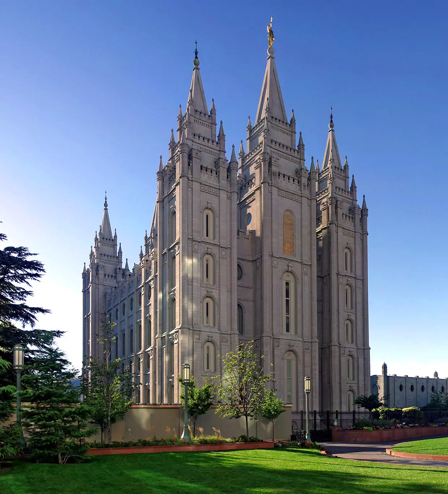
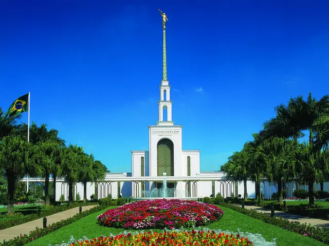
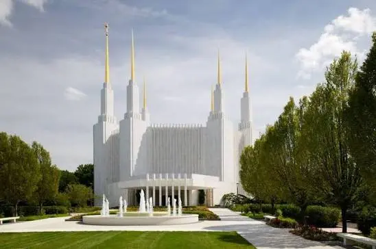
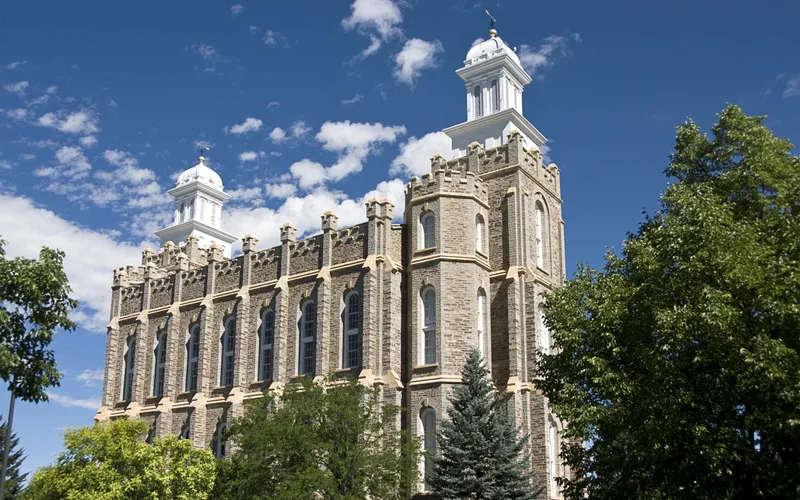
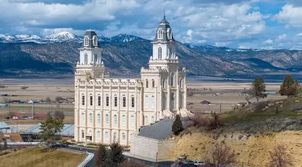
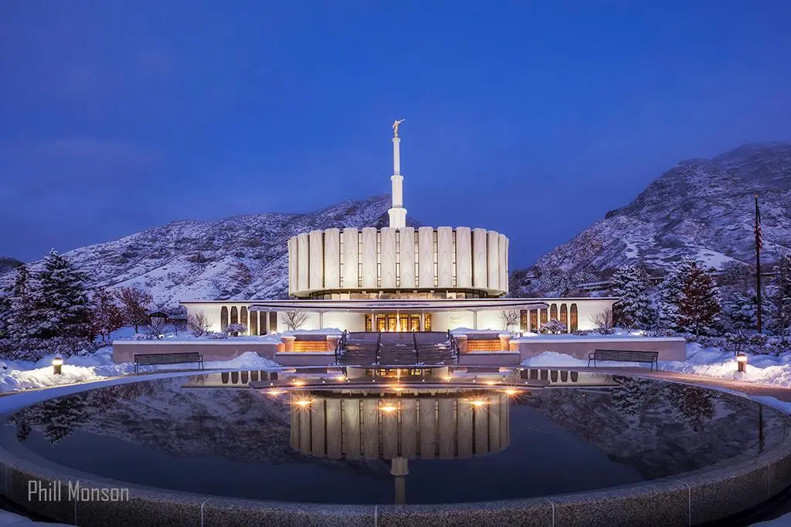

Álbum do Templo
☰
Página Inicial
Antigo
Novo
Grande
Pequeno
Templos do Mundo

Templo de Salt Lake

Templo de São Paulo

Templo de Washington D.C.
Templo de Londres
Templo de Roma
Templo de Nauvoo

Templo de Logan

Templo de Manti

Templo de Provo